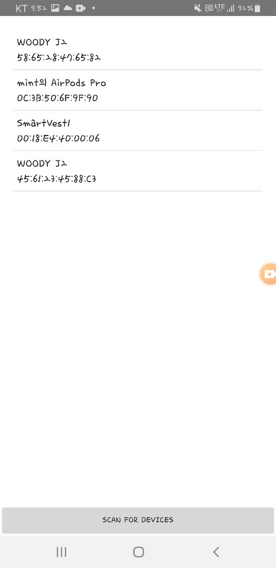

<h4>&lt;조끼의 전원 확인하기&gt;</h4>

<div style="padding-left:10px; white-space:pre-wrap;">1) 조끼의 전원이 켜졌는지 확인합니다. 전원이 켜져있지 않다면 전원을 켜세요.

</div>
<h4>&lt;블루투스 연결하기&gt;</h4>

<div style="padding-left:10px; white-space:pre-wrap;">1) 우측 상단의 '블루투스 연결하기' 버튼을 클릭합니다.

</div>

<div style="padding-left:10px; white-space:pre-wrap;">2) 블루투스 기기 목록에서 'smartvest'를 찾아 클릭합니다.

</div>

<div style="padding-left:10px; white-space:pre-wrap;">3) 연결이 완료되면 좌측 상단에 '내조끼 번호'가 나타나고, '조끼 연결 상태'가 '연결'이 됩니다.

</div>